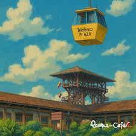
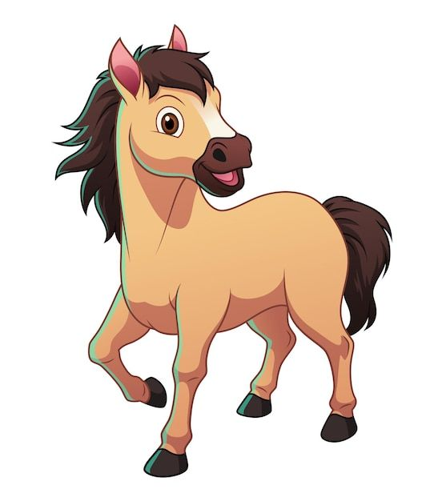
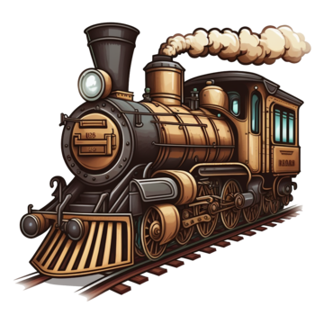
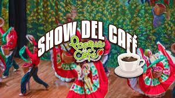
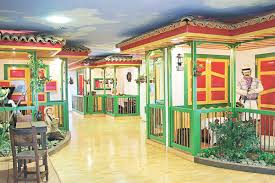

Niveles del Juego
 Nivel 1 – El comienzo en la plaza
El jugador llega al Parque del Café y encuentra un entorno triste y apagado. Al llegar a la plaza, se encuentra con una pareja de abuelos desorientados.
 Nivel 2 – Zona de cultivos de café
Nivel 2 – Zona de cultivos de café
El jugador se dirige a la zona de cultivos donde aprende sobre el café y encuentra un libro de recetas. Deberá arreglar los cultivos superando pruebas como regar adecuadamente, aplicar fertilizante correcto y quitar maleza. Luego entrega el libro a los abuelos, y la abuela recuerda la importancia histórica del café para Colombia y el parque.
 Nivel 3 – El establo y los caballos
En el establo, los caballos están descuidados. El jugador debe alimentarlos y reparar una carroza. Al final encuentra una herradura dorada, que entrega a los abuelos. Esto despierta en el abuelo el recuerdo del valor de los caballos, y se lo comparte al jugador.
 Nivel 4 – La estación del tren
Los abuelos acompañan al jugador a la estación del tren. El tren está dañado y desconectado. Los abuelos recuerdan cómo viajaban en tren entre municipios, lo que motiva al jugador a repararlo. Cuando logra hacerlo funcionar, todos suben al tren, cerrando este nivel.
 Nivel 5 – El teatro y el show del cafe
El jugador llega al teatro y nota que los bailarines del show del café no están. Debe encontrarlos y convencerlos de volver a actuar. Cuando aceptan, los abuelos recuerdan las fiestas tradicionales con carranga, bambuco, pasillo y otros ritmos folclóricos.
 Nivel 6 – El museo del cafe
Uno de los bailarines informa que el museo está cerrado porque un hombre no quiere entregar la llave. El jugador debe animarlo usando pistas: darle un capuchino con Baileys y un pase para un paseo a caballo. Si lo hace bien, obtiene la llave, abre el museo y los abuelos finalmente recuperan todos sus recuerdos. Así concluye el juego.
Al final del juego, se guarda el tiempo que el jugador tardó en completar la aventura para mostrar una tabla de clasificaciones.